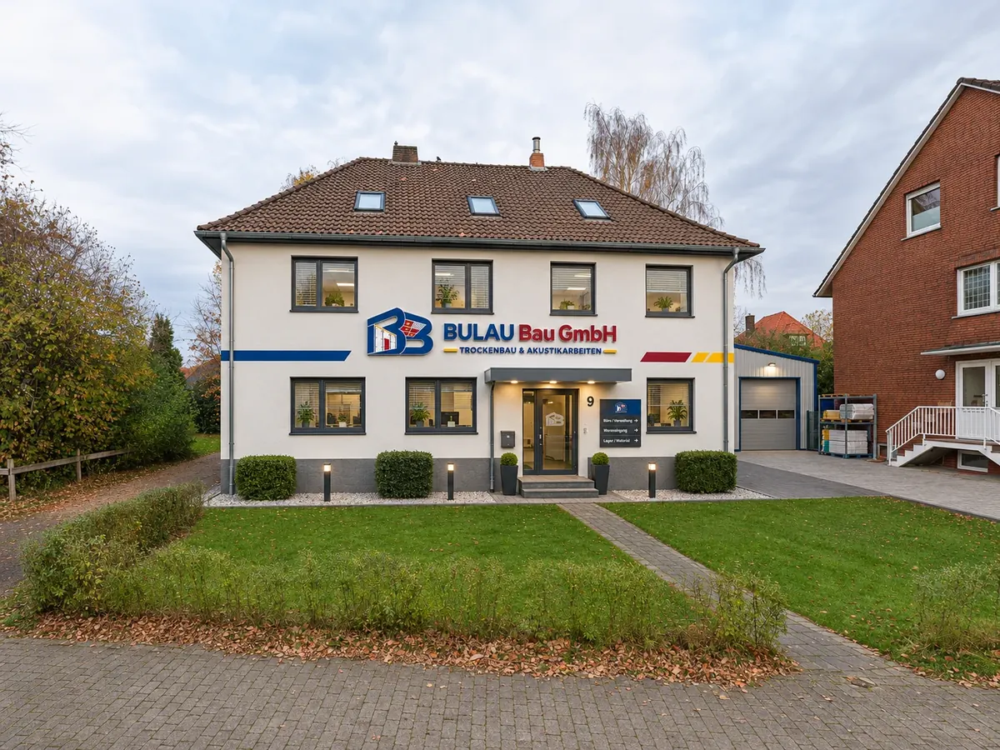

Anfahrt
So finden Sie uns
Unser Betrieb sitzt in Bersenbrück, Am Bahnhof 9. Am besten rufen Sie kurz vorher an, denn tagsüber sind wir meistens auf Baustellen.
Bulau Bau GmbH
Am Bahnhof 9, 49593 Bersenbrück
Beim Laden der Karte werden Daten, zum Beispiel Ihre IP-Adresse, an Google übertragen. Mehr dazu in der Datenschutzerklärung.

Vor Ort
Daran erkennen Sie uns
Ein weißes Haus mit unserem großen Logo an der Fassade und der Hausnummer 9 neben der Eingangstür. Das Büro erreichen Sie über den Weg in der Mitte.
Für Warenannahme und Materiallager fahren Sie rechts am Haus vorbei zu unserer Halle mit dem grauen Rolltor.
Wir kommen auch zu Ihnen
Für Ihr Projekt müssen Sie nicht zu uns fahren. Schreiben Sie uns, und wir kommen zur Besichtigung vorbei.